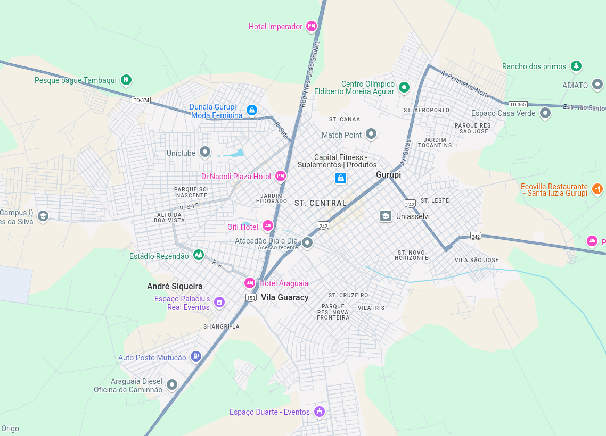

A JH & D realiza o serviço de pintura e identificação de armários de energia elétrica, por meio de pinturas a base de spray de tinta, e a identificação por meio de anilhas.
O que fazemos?
Preços
Os serviços da JH & D custam em média R$ 35,00 por caixa com anilha, e R$ 30,00 por caixa sem anilha, mas dependendo da localização esse valor está a combinar. Pois a JH & D atua pre preferencialmente em Gurupi-TO, e em cidades próximas.
Utilidade
Esse serviço prestado pela JH & D, é essencial para a aprovação do projeto por parte da comphania elétrica, exige pintura e identificação. O ideal são pinturas, mas há quem coloque adesivos, que saem muito rápido com o passar do tempo. Já as pinturas duram anos até décadas.
Onde irei usar isso?
Supondo que um dia seja nessecária, a manutenção da rede elétrica do prédio ou casa, e vocẽ precise dar manutenção em um apartamento ou residẽncia específicos. Como saber qual padrão pertence a qual residẽncia? A solução são os serviços da JH & D! eles permitirão que vocẽ saiba qual padrão pertente a qual residẽncia.
Onde atuamos?
Como dito anteriormente, nos atuamos freferencialmente em Gurupi-TO, mas serviços fora dessas região também são possíveis, mas os preços tndem a serem maiores. Mas ainda assim possíveis.

Nossa equipe
Nossa equipe consta com profissionais especializados na área, com longa bagagem. Profissionais com mais de 23 anos de experiẽncia e aprendizes com mais de 2 anos aprendendo com os melhores. Tudo isso para genrantir o melhor serviço pra vocẽ.